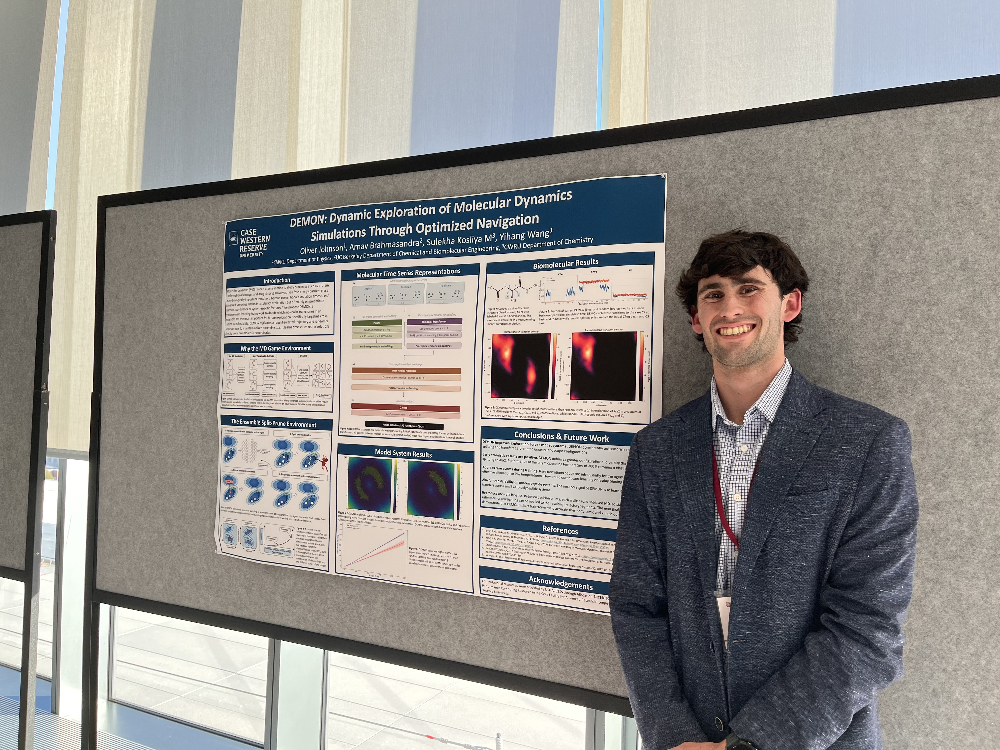

Oliver Johnson
I am an undergraduate physics student at Case Western Reserve University, where I am concentrating in biophysics.
I work with Professor Yihang Wang on DEMON, a project exploring how reinforcement learning can help molecular simulations find events that are difficult to observe in ordinary runs. Most of my work so far has involved building the learning and simulation code and figuring out how to test it fairly, alongside extensive architectural experiments to find strong representations of molecular time series.
I'm interested in how understanding molecular behavior can influence human health, and how smart molecular/scientific ML models can create a better world. I'm also fascinated by the interractions between radiation and life in the context of imaging and radiotherapies.
Outside the lab, I swim on the CWRU Varsity Swimming & Diving team, love to spend time outdoors, and will play pretty much any board game you can recommend. Outside the collegiate swim season I also like to stay active doing pretty much anything outdoors or in the gym!
Résumé (PDF)owj4@case.eduLinkedIn
B.S. Physics, expected May 2029; concentrating in biophysics
Updates
Presented DEMON at the UChicago–Caltech AI in Science Conference in Chicago.
Presented a poster on DEMON at CWRU Intersections.
Selected for CWRU's Sponsored Summer Research Program to continue research in the Wang Group.
Joined Professor Yihang Wang's research group to work on reinforcement learning for molecular simulation.
Skills
Scientific programming
I work mostly in Python, JAX, and NumPy, building code for experiments and simulation workflows. I'm comfortable working in Linux and on Slurm clusters.
Molecular simulation
My current work uses OpenMM and parallel trajectory workflows to study how molecules move between states.
Machine learning
I've worked with PyTorch, discrete Soft Actor-Critic, and learned representations for molecular trajectories, including architectures like EGNN (the O.G. Max Welling one), PaiNN, CNNs/UNet, and temporal transformers.
Research communication
I enjoy making technical work understandable, from writing up methods to presenting a research poster.
Research
Professor Yihang Wang's group at Case Western Reserve University
DEMON: Dynamic Exploration of Molecular Simulations Through Optimized Navigation
Molecular simulations can reveal how proteins and other molecules move, but transitions between important states may be rare. DEMON asks whether a learning algorithm can help a fixed ensemble of simulations explore more broadly.
At each decision, the agent selects one trajectory to copy and another to prune. It learns from the resulting configurations rather than following a reaction coordinate designed in advance. We have tested the approach on model energy landscapes and are studying its behavior on molecular systems.

In early alanine dipeptide evaluations, DEMON explored a broader set of conformations than random splitting. These are preliminary results; questions about transfer and reliability are still open.
Take a look at the DEMON poster from the UChicago & Caltech AI+Science Conference 2026! (PDF)
I've contributed to the learning and simulation code, including discrete Soft Actor-Critic, molecular trajectory representations, parallel OpenMM workflows, and a JAX model-system implementation that improved simulation throughput by up to about 190×.
More about the methods and tools
My recent work has included PaiNN and EGNN representations, temporal Transformers, permutation-equivariant attention across replicas, and graph-aware replay for molecular systems. Tools I use include Python, PyTorch, JAX, NumPy, OpenMM, Linux, and Slurm. In addition to these implementations, working on Prof. Wang's group has pushed me to understand many amazing papers around generative sampling of ensembles, RL theory, and statistical mechanics. I've been fortunate to do independent studies in statistical mechanics both within the group and totally on my own, going through material like Kardar's Statistical Physics of Particles, and leading the group through a derivation of MaxCal and how it relates to Markovian dynamics.
Gallery


Education
Case Western Reserve University
B.S. in Physics, biophysics concentration; expected May 2029
Sponsored Summer Research Program awardee in 2026; Dean's High Honors twice
Contact
If you'd like to talk about research, biophysics, or the ways computational work can connect with human health, I'd be glad to hear from you.